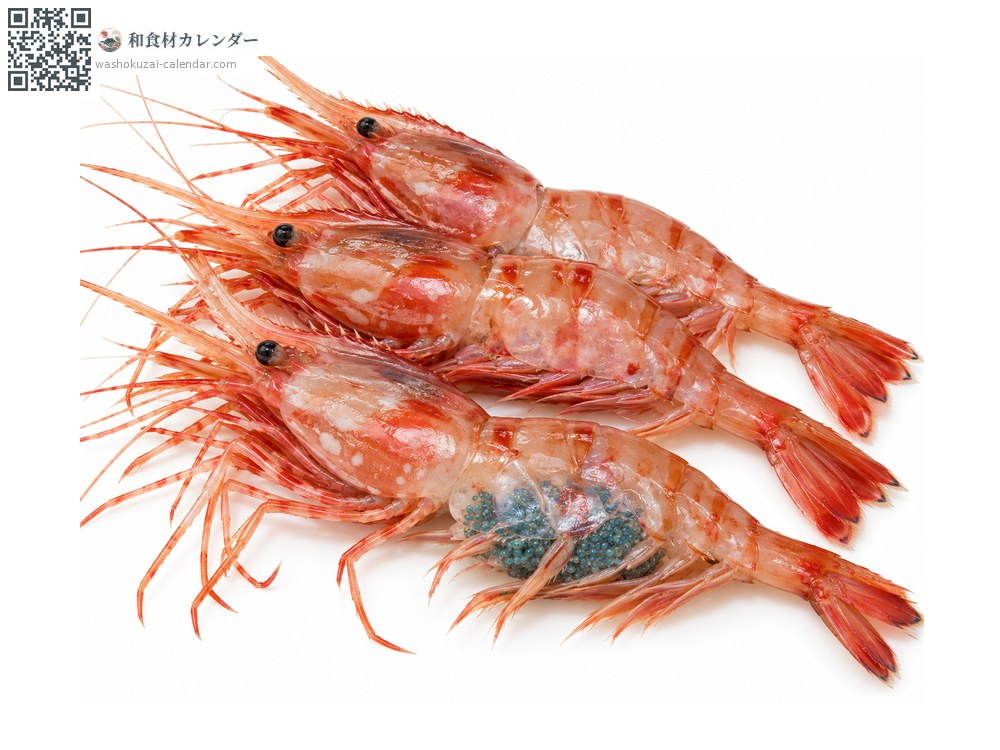
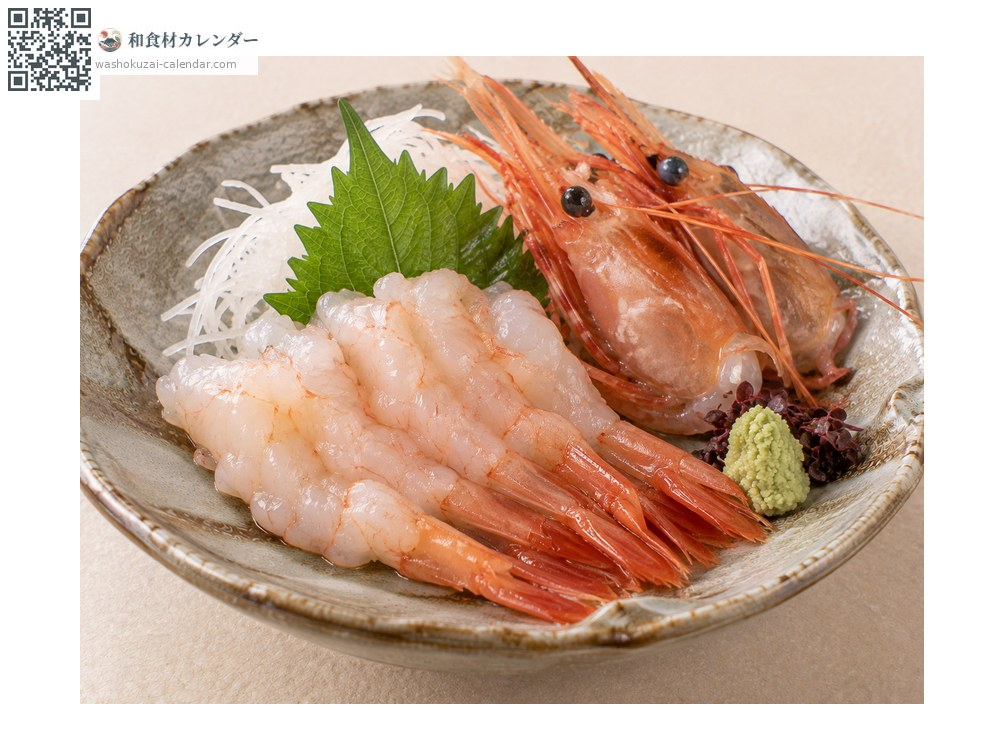
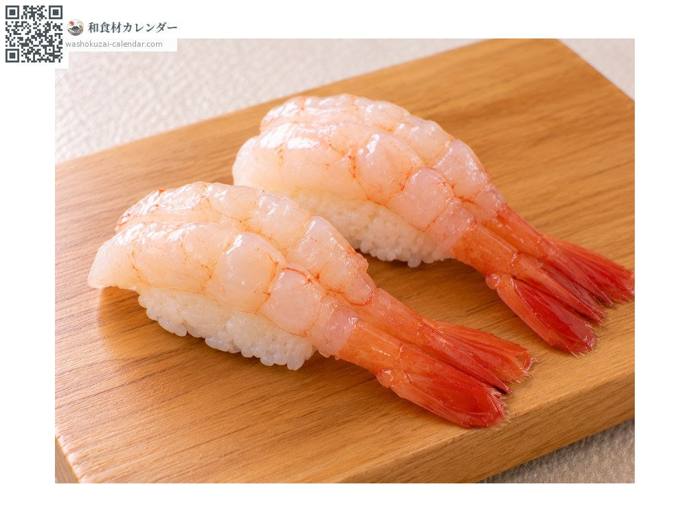
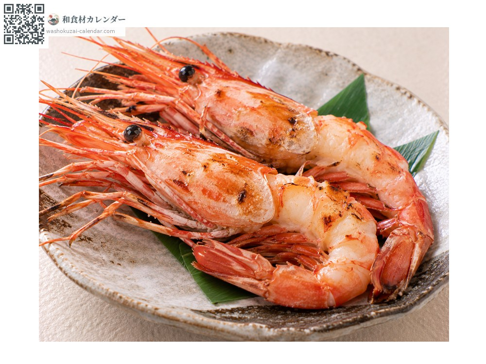
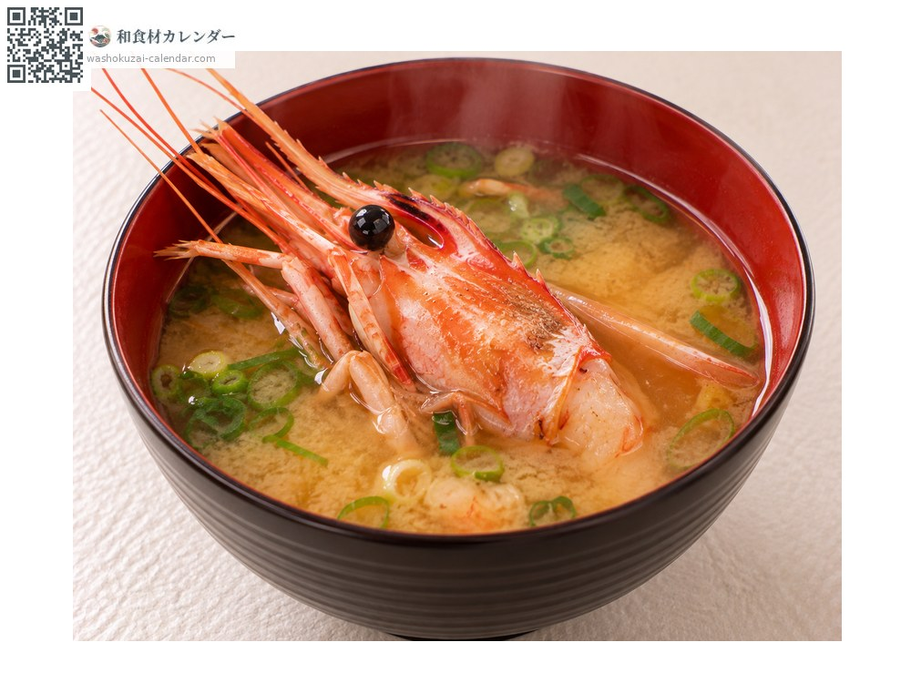

Seafood
Botan shrimp
ボタン海老 ぼたんえび botanebi
Also known asbotanebi
At its best in Jan, Feb, Nov, Dec

When it is at its best
Jan
Feb
Mar
Apr
May
Jun
Jul
Aug
Sep
Oct
Nov
Dec
In seasonAvailable
How to cook

Sashimi
Eaten raw, for a sweetness that melts on the tongue.

Sushi
Prized as a nigiri topping; the heads go into soup.

Shioyaki (salt-grilled)
Grilled in the shell, which brings out the aroma.

Miso soup
The heads give a rich broth.
How to choose
Taut shells with heads not darkened. On berried shrimp, the blue eggs should be vivid.
Storage
Spoilage starts at the head, so remove it early. Sashimi-grade should be used the same day.
Main areas
Good to know
Its formal name is toyama-ebi, from the bay where it was once caught in quantity, though most now comes from Hokkaido. It is born male and changes sex to female as it grows. Berried shrimp are prized with their blue eggs intact.
At their best around the same time
 Chub mackerel
Chub mackerel Japanese amberjack
Japanese amberjack Pacific bluefin tuna
Pacific bluefin tuna Swordfish and marlin
Swordfish and marlin Yellowback seabream
Yellowback seabream Golden threadfin bream
Golden threadfin bream Spottedtail morwong
Spottedtail morwong Largescale blackfish
Largescale blackfish